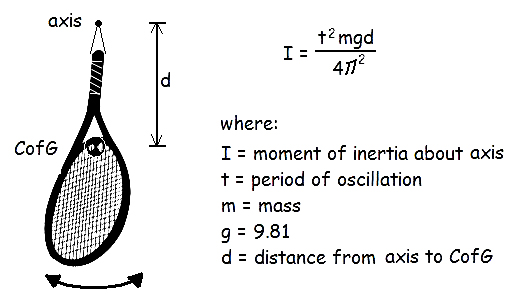
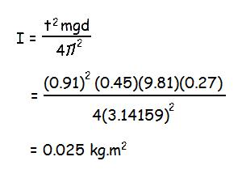
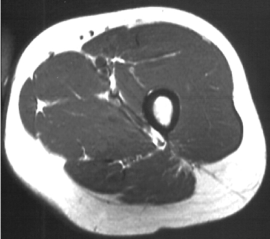
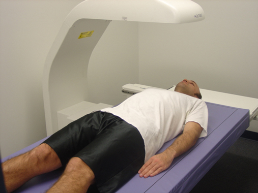
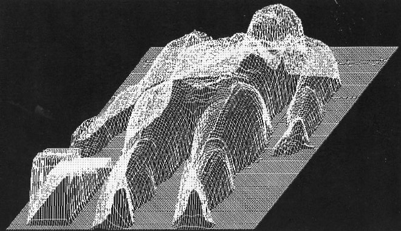

Pendulum Technique
In a previous lecture ( anthropometry ) we used a "look-up" table to calculate the segment masses, locations of the center of mass(CM) and moments of inertia of human limb segments. It was explained how mass could be determined with a scale and the CM could be determined by balancing the segment on a knife edge. The moment of inertia (I) determination was not explained. In this lecture we start with an explanation of the Pendulum Technique which is a valuable method for cadaveric segments as well as other objects such as prosthetic limbs, tennis rackets or any other artificial device used in human motion.

We can determine the moment of inertia of any object that is suspended and allowed to swing through a small range (less than 10o). The period of oscillation is dependent on the moment of inertia, the mass of the object, the distance the axis is from the CM and gravity. Once we know I about the swinging axis, we can use the parallel axis theorem to determine the moment of inertia about any other point and also the radius of gyration (k).
Example: Find the moment of inertia of the tennis racket.
Given: mass = 0.45 kg, t = 0.91 seconds, d = 0.27 m
Solution:

Now
that we know
the moment of inertia of the tennis racket is 0.025 kg.m2,
what is the moment of inertia about an elbow if which is 0.20m
further away and the shoulder which is 0.43m away from the
axis in
the diagram?
Living Subject Techniques
Geometric modeling: Hanavan model and Jensen's elliptical models

1) Hanavan Model
The human body has been simplified to a system of standard geometric solids of constant density in order to determine the location of center of mass and moments of inertia. The diagram to the right shows the model created by Hanavan that consisted of cylinders, spheres, and frustra (tapered cylinders).
One advantage of these models is that they are mathematically easy to implement and they can be scaled to individuals of different proportions by using segment lengths rather than whole body height and weight.
2) Elliptical Models

Bob Jensen used stereo photogrametry to create elliptical models in order to estimate anthropometric variables of children.
3) Reaction Change Method: This method was covered on the previous page.

4) Water Immersion Method: The volume of human limb segments can be measured by immersing them in water and measuring the amount of water displaced. This volume can be converted to mass by multiplying the volume by a density estimate. This method was first used by Harlis in the 1850's and can also yield the location of the center of gravity if density can be assumed to be evenly distributed throughout the segment.
5) Quick Release Method: The moment of inertia of a human limb segment can be calculated by placing an accelerometer on the limb and securing the limb with a cable attached to a force transducer. The subject contracts the muscles against the force transducer which records the applied moment of force. The limb is then released which causes it to accelerate due to the muscle forces. The force transducer is multiplied by the moment arm to get the applied moment and it is then divided by the tangential acceleration to yield the moment of inertia.
6)Medical Imaging
CT scan:

MRI scan:

Dual X-ray Absorptiometry (DXA):


DXA machines are traditionally used to estimate bone density. Patients are scanned by two photon beams of different power . As the beams pass through the tissues, their energies are absorbed and a calculation can be made regarding the amount (mass) of tissue as well as the composition of bone, fat and lean tissue. Dowling, Durkin, et al. have shown that the scanned elements can be plotted in a "mass map", in which the height of each element is proportional to the amount of mass (see lower figure).
The mass map can be divided digitally in a similar way to a cadaver dissection and the mass, center of mass and moment of inertia can be determined for each body segment.
The procedure exposes the subject to a low dose of radiation and is very accurate. However, the machines are expensive and the process is quite time consuming. Currently, this method is mostly been used in research to build more accurate elliptical models.